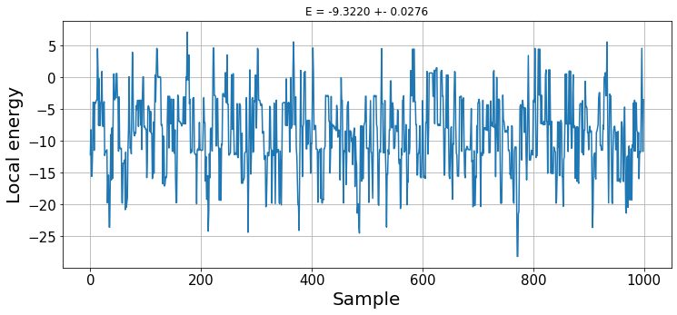
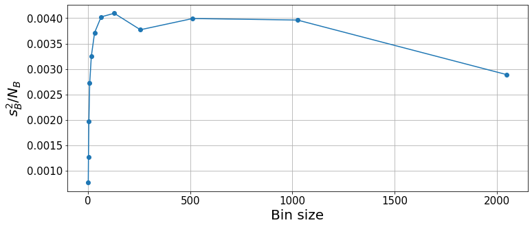
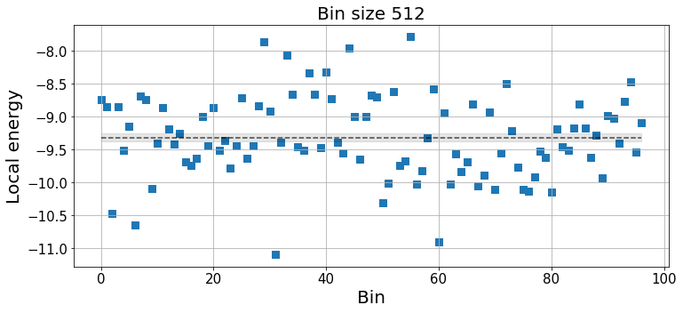
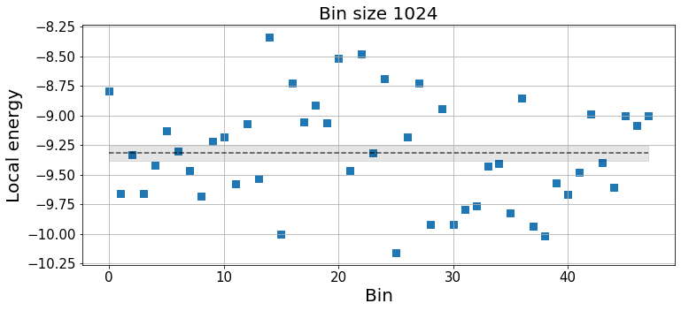
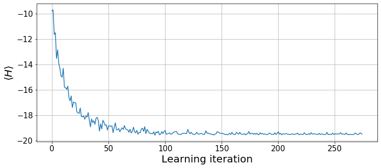
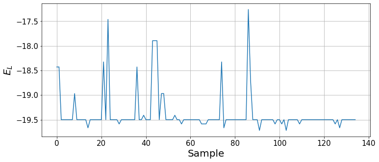

class RBM:
"Super simple implementation of an RBM with complex parameters."
def __init__(self, n_visible, n_hidden):
self.n_visible = n_visible
self.n_hidden = n_hidden
self.reset()
def reset(self):
"Reinitializes the complex parameters at random."
b = np.random.randn(self.n_visible) + 1j*np.random.randn(self.n_visible) # visible bias
c = np.random.randn(self.n_hidden) + 1j*np.random.random(self.n_hidden) # hidden bias
W = (np.random.randn(self.n_hidden, self.n_visible) +
1j*np.random.randn(self.n_hidden, self.n_visible)) # weights
self.params = np.concatenate((b, c, W.ravel())) / 10
@property
def b(self): return self.params[:self.n_visible]
@property
def c(self): return self.params[self.n_visible:self.n_visible+self.n_hidden]
@property
def W(self): return np.reshape(self.params[self.n_visible+self.n_hidden:],
(self.n_hidden, self.n_visible))
def p(self, v):
"Probability amplitude of a visible state `v`. We don't need it for Monte Carlo."
return np.exp(np.conj(self.b) @ v)*np.prod(np.cosh(self.c + self.W @ v))*2**self.n_hidden
def p_ratio(self, v1, v2):
"Probability ratio between state `v2` and reference `v1`"
f1 = np.cosh(self.c + self.W @ v1)
f2 = np.cosh(self.c + self.W @ v2)
log_diff = np.conj(self.b) @ (v2-v1) + sum(np.log(f2/f1)) # log of ratio for numerical stability
return np.exp(log_diff)
def p_ratios(self, v1, v2):
"Probability ratio between list of states `v2` and reference state `v1`."
return [self.p_ratio(v1, v) for v in v2] Monte Carlo Integration
The main power of Monte Carlo methods comes from the capability of computing high-dimensional integrals in large spaces. In physics, this allows us to compute expectation values of the form \[\langle f\rangle = \int dx p(x)f(x) \ \ \ \text{or} \ \ \ \langle f \rangle = \sum_{x} p(x)f(x)\] for continuous and discrete sytems, respectively. Where \(p\) is the probability distribution over states \(x\) and \(f\) is a function of the state, such as its corresponding energy.
Physics is benevolent and, generally, the systems of interest only span a tiny bit of their phase space, meaning that \(p(x)\simeq 0\) for most states \(x\) and, therefore, most of the terms in the previous sum have a meaningless contribution. With Monte Carlo, rather than accounting for all the possible states \(x\), we approximate the expectation value by sampling from \(p(x)\). Hence, \[\langle f \rangle \approx \frac{1}{N}\sum_{i=1}^Nf(x_i),\] where \(x_i\) are sampled according to \(p(x)\). This is called importance sampling and it allows us to obtain reasonably good approximations with a limitted amount of samples.
Energy expectation of a quantum system
In quantum phsyics, a quantity of utmost interest is the expected value of the energy of a system under the action of a Hamiltonian \(H\) and a wave function \(\Psi(x)\) in a given basis \(x\) \[\langle H \rangle = \frac{\langle\Psi^*|H|\Psi\rangle}{\langle \Psi|\Psi\rangle} = \frac{\int dx\Psi^*(x)H\Psi(x)}{\int dx\Psi^*(x)\Psi(x)}.\]
From now on, we will omit the dependency on the state and denote \(\Psi\equiv\Psi(x)\) unless needed for clarification. By introducing a term \(\frac{\Psi}{\Psi}\) into the numerator, we can rewrite the integral in a convenient way for Monte Carlo integration \[\langle H \rangle = \frac{\int \Psi^*\frac{\Psi}{\Psi}H\Psi}{\int \Psi^*\Psi} = \frac{\int |\Psi|^2 \frac{H\Psi}{\Psi}}{\int |\Psi|^2} = \int \rho E_L,\] where \(\rho=\frac{|\Psi|^2}{\int|\Psi|^2}\) is the probability density and \(E_L=\frac{H\Psi}{\Psi}\) is the so-called local energy.
Hence, the expected energy can be computed via Monte Carlo integration as the expectation value of the local energy over the probability distribution \(\rho=\frac{|\Psi|^2}{\int|\Psi|^2}\), such that \[\langle H\rangle \approx \frac{1}{N}\sum_{k=1}^NE_L(x_k)\]
Note
\(x\) can be any convenient basis for the given problem at hand, it does not refer to position. In the example case that we will be solving in this tutorial, we take the basis \(\sigma^z\) for a spin system.
Importance Sampling
One of the most important aspects for Monte Carlo integration is the way that importance sampling is done. Markov Chain Monte Carlo (MCMC) is an efficient approach to perform sampling in many dimensions when the probability density \(p(x)\) is dominated by a small part of the whole state space.
Samples are drawn iteratively, forming a Markov Chain, starting from any given state. In order to properly compute the expected value, the Markov Chain needs to converge to the stationary distribution \(p(x)\) regardless of the initial state.
Let \(t(x\rightarrow x')\) be the probability to transition from state \(x\) to \(x'\) such that \(\sum_{x'}t(x\rightarrow x')=1\), and \(p_s(x)\) the probability to be in state \(x\) at step \(s\). Then, \(p_{s+1}(x) = \sum_{x'}p_s(x')t(x'\rightarrow x)\). A stationary probability is obtained when \(p_s(x)\) is independent of the step and, therefore, \[p(x) = \sum_{x'}p(x')t(x'\rightarrow x).\]
If a Markov chain is irreducible, the stationary distribution is unique and, if it is also aperiodic, it converges to it. A sufficient condition for stationarity is satsifying the detailed balance condition \(p(x)t(x\rightarrow x') = p(x')t(x'\rightarrow x)\).
The Metropolis-Hastings algorithm {% cite HastingsBiometrika1970%} is built to satisfy detailed balance. This is a very simple algorithm in which we split the transition probability \(t(x\rightarrow x')\) into two factors: the probability to propose or choose the next state \(c(x\rightarrow x')\) and the probability to accept the next state \(a(x\rightarrow x')\) such that \[t(x\rightarrow x') = c(x\rightarrow x')a(x\rightarrow x').\] Detailed balance is fulfilled by taking \(a(x\rightarrow x')=\min\left\{1, \frac{p(x')}{p(x)}\frac{c(x'\rightarrow x)}{c(x\rightarrow x')}\right\}\).
Generally, the probability to propose a state is symmetric \(c(x\rightarrow x')=c(x'\rightarrow x)\), as it can be, for instance, the case of randomly flipping a spin in a lattice. In these cases, the acceptance probability is simplified \[a(x\rightarrow x') = \min\left\{1, \frac{p(x')}{p(x)}\right\}.\]
A Markov Chain is generated by iterating over the following two steps: 1. With a state \(x\), propose a new state \(x'\) with probability \(c(x\rightarrow x')\) 2. Accept \(x'\) with probability \(a(x\rightarrow x')\). If rejected, the next state is \(x\).
The time it takes for the Markov Chain to converge to the stationary distribution is called thermalisation. In other words, thermalisation is the time it takes to the Markov Chain to forget its initial state. With MCMC we need to wait for the thermalisation to finish before we can start drawing samples from the desired probability distribution. These samples, though, will be highly correlated between one another, thus requiring careful error analysis to be properly handled. We will deal with this later on.
Metropolis-Hastings for quantum systems
As it was previously introduced, the expectation value of the energy can be obtained by sampling configurations according to the distribution \(\rho=\frac{|\Psi|^2}{\int|\Psi|^2}\). Hence, we want to create a Markov Chain that converges to the stationary distribution \(\rho\) and, therefore, the acceptance probabilities need to be defined accordingly \[a(x\rightarrow x') = \min\left\{ 1, \frac{\rho(x')}{\rho(x)}\right\} = \min\left\{1, \frac{|\Psi(x')|^2}{|\Psi(x)|^2}\right\}.\] Notice that the normalisation factor \(\int|\Psi|^2\) cancels out. Thus, we never have to worry about normalising probabilities, which would, most times, make the computation intractable.
Example - Monte Carlo Integration
With this, we have the tools to compute the expectation value of an observable of a quantum many-body system. As an example, we will take the quantum Ising spin model \[H = J\sum_{i=1}^{n-1}\sigma_{i}^z\sigma_{i+1}^z + B\sum_{i=1}^n\sigma_{i}^x,\] where \(\sigma_i^z, \sigma_i^x\) are the Pauli matrices acting on the \(i\)-th site, with open boundary conditions.
The only thing that is missing is a trial wave function \(\Psi\) to perform the sampling. We will take the Restricted Boltzmann Machine (RBM) ansatz, as introduced in {% cite CarleoScience2017%}, of the form \[\Psi(x) = e^{b^Tx}\prod_{i=1}^{n_h}2\cosh(c_i + W_{i\cdot}x),\] where \(b, c, W\) are the visible biases, hidden biases and weight matrix, respectively, and \(n_h\) denotes the number of hidden units.
For now, we can just take this as a functional ansatz without diving much further into RBMs. The only thing that we need to know is that RBMs have two layers: a visible and a hidden layer. The visible layer corresponds to the physical system, while the hidden layer provides a set of auxiliary parameters that mediate the interaction between physical units. Therefore, the size of the visible layer is fixed by our problem and we need to choose the size of the hidden layer \(n_h\). The higher \(n_h\), the higher the representability of the ansatz, at the cost of more expensive computations. Since RBMs are universal approximators, we can always improve our solution by increasing \(n_h\).
Note
The code is by no means optimized. In fact, almost everything here presented is very suboptimal. It is meant to be easily readable and resemble the equations as much as possible, in order to provide an idea of the overall procedure.
Let us define the physical system by choosing the number of spins, the coefficients of the Hamiltonian and the parameters of our wave function. For now, provided that we need a starting point for our trial wave function, we simply take a set of random parameters for our RBM ansatz.
np.random.seed(7)
n = 10 # Number of spins
J, B = -2, -1 # Hamiltonian
n_visible, n_hidden = n, 2*n # RBM size: twice as many hidden neurons
psi = RBM(n_visible, n_hidden) # Randomly initialize our anstazWith this, we define some functions to make our code more readable.
def local_energy(x, psi):
"Local energy of Ising spin model."
# Interaction term
couplings = (x[:-1]==x[1:])*2-1
e_interaction = J*sum(couplings)
# Transverse field
states_with_flip = [flip(x, i) for i in range(len(x))]
e_field = B*sum(psi.p_ratios(x, states_with_flip))
return e_interaction + e_field
def flip(x, i):
"flips i-th bit of x"
xflip = deepcopy(x)
xflip[i] = 1-xflip[i]
return xflipAnd now we are ready to do the Monte Carlo integration. When dealing with spins, new states are obtained by flipping spins, so we need to choose the total amount of samples to draw n_samples and the amount of spin flips n_flips performed to propose a new configuration.
n_samples = 50000
n_flips = 1
state = np.random.randint(0, 2, n) # initial random state
states, energies = [], []
for k in tqdm(range(n_samples)):
# Sample new state
spin_idx = np.random.randint(0, n, n_flips)
new_state = flip(state, spin_idx)
if np.random.random() <= np.abs(psi.p_ratio(state, new_state))**2:
state = deepcopy(new_state) # Accept new state
states.append(state)
energies.append(np.real(local_energy(state, psi)))Code
plt.figure(figsize=(12, 5))
plt.plot(energies[:1000]) # Plot some
plt.grid()
plt.tick_params(labelsize=15)
plt.ylabel("Local energy", fontsize=20)
plt.xlabel("Sample", fontsize=20)
plt.title(f"E = {np.mean(energies):.4f} +- {np.std(energies)/np.sqrt(n_samples):.4f}");
With this random wave function, we do not observe any thermalisation. The result is the expected energy obtained with our wave function ansatz. Later on, we will see how to optimize its parameters to find the ground state energy.
Statistical analysis and autocorrelation time
Because of the nature of Markov chains, measurements are always correlated to a certain degree. Given that new states are obtained by modifying the previous ones, consecutive states can be highly correlated, although the correlation fades as the number of steps between states increases. The distance at which we can consider two states to be uncorrlated in the Markov chain is the autocorrelation time \(\tau\).
The statistical error \(\epsilon\) is obtained via \[\epsilon = \sqrt{\frac{s_f^2}{N}}, \ s_f^2 = \frac{1}{N-1}\sum_{i=1}^N\left(f(X_i) - \langle f \rangle\right)^2.\] These quantities, however, are well defined for uncorrelated samples. Hence, knowing the autocorrelation time \(\tau\), we can compute our estimation values by exclusively taking samples every \(\tau\) (or \(\geq\tau\)) steps.
Binning analysis
Knowing the autocorrelation time is extremely important. However, finding the autocorrelation function is too costful and difficult to analyse so, in practice, we rely in the binning analysis of the time series to estimate both \(\tau\) and \(\epsilon\). The main idea is that averages over chunks of the time-series, which are longer than the autocorrelation time, are independent of each other, thus providing the right error estimates.
Provided that we do not have any prior knowledge about the autocorrelation time, we have to use blocks of increasing lengths until the error estimate converges. We cut the time series into \(N_B\) blocks of fixed length \(k\) for several values of \(k=2^0,2^1, 2^2, \dots\) With this, we can compute the block average of the \(i\)-th block \[\langle f \rangle_{B_i}=\frac{1}{k}\sum_{t=1}^kf(x_{(i-1)k+t}).\] All the blocks have a mean \[\langle f\rangle_B = \frac{1}{N_B}\sum_{i=1}^{N_B}\langle f\rangle_{B_i},\] which, when the block length \(k\) is larger than the autocorrelation time \(\tau\), allows us to compute the squared statistical error \[\epsilon^2\approx\frac{s_B^2}{N_B}=\frac{1}{N_B(N_B-1)}\sum_{i=1}^{N_B}\left(\langle f\rangle_{B_i} - \langle f\rangle_B\right)^2.\] If the blocks are independent, \(\frac{s_B^2}{N_B}\) remains constant for increasing values of \(k\), although for large \(k\) (low \(N_B\sim100\)) statistical fluctuations emerge.
The integrated autocorrelation time can be infered from the binning analysis results. Being \[\tau=\frac{1}{2}\frac{\frac{s_B^2}{N_B}(k\rightarrow \infty)}{\frac{s_B^2}{N_B}(k=1)}.\] Bear in mind that the autocorrelation time can change between quantities.
Example - Binning analysis
Let us continue with our previous example and perform the binning analysis in order to properly infer the error and the autocorrelation time out of the Markov Chain that we have already generated.
def bin_averages(x, bs):
"Bins time-series `x` into `bs` chunks and takes means"
nb = len(x)//bs
bin_avg = [np.mean(x[b*bs:(b+1)*bs]) for b in range(nb)]
return np.array(bin_avg)ks = [2**k for k in range(12)]
errors, means, bin_avgs = [], [], []
for k in ks:
bin_avg = bin_averages(energies, k)
error = np.sqrt(np.var(bin_avg)/len(bin_avg))
errors.append(error)
means.append(bin_avg.mean())
bin_avgs.append(bin_avg)Code
plt.figure(figsize=(12, 5))
plt.plot(ks, np.array(errors)**2, 'o-')
plt.grid()
plt.tick_params(labelsize=15)
plt.ylabel(r"$s_B^2/N_B$", fontsize=20)
plt.xlabel("Bin size", fontsize=20);
With the binning analysis, we see that the squared error converges for a bin size of \(\sim100\). For very large bin sizes, the low number of bins incurs some statistical fluctuations. Thus, the result and statistical errors are properly computed for bin sizes \(64\leq k\leq1000\). We can take any of these values as valid, although the smaller the bin sizes, the lower the overall computational cost. Hence, for future calculations, we will try to keep a bin size that is well converged but not too large, e.g. between \(100\) and \(200\).
Code
print(f"{means[-3]:.4f} +- {errors[-3]:.4f} for k={ks[-3]}")-9.3152 +- 0.0632 for k=512As shown before, we can also use these results to infer the autocorrelation time.
tau = (errors[-3]/errors[0])**2; tau5.243713762799869Let us see the bin averages with the mean and statistical error.
Code
k_idx = -3 # Choose the bin size
bins = np.arange(len(bin_avgs[k_idx]))
plt.figure(figsize=(12, 5))
plt.scatter(bins, bin_avgs[k_idx], s=50, marker='s')
plt.hlines(means[k_idx], bins[0], bins[-1], linestyles='--', alpha=0.7)
plt.fill_between(bins, means[k_idx]-errors[k_idx], means[k_idx]+errors[k_idx], color='k', alpha=0.1)
plt.grid()
plt.tick_params(labelsize=15)
plt.title(f"Bin size {ks[k_idx]}", fontsize=20)
plt.ylabel("Local energy", fontsize=20)
plt.xlabel("Bin", fontsize=20);
k_idx = -2 # Choose the bin size
bins = np.arange(len(bin_avgs[k_idx]))
plt.figure(figsize=(12, 5))
plt.scatter(bins, bin_avgs[k_idx], s=50, marker='s')
plt.hlines(means[k_idx], bins[0], bins[-1], linestyles='--', alpha=0.7)
plt.fill_between(bins, means[k_idx]-errors[k_idx], means[k_idx]+errors[k_idx], color='k', alpha=0.1)
plt.grid()
plt.tick_params(labelsize=15)
plt.title(f"Bin size {ks[k_idx]}", fontsize=20)
plt.ylabel("Local energy", fontsize=20)
plt.xlabel("Bin", fontsize=20);

Monte Carlo optimization
Now that we are able to reliably compute expectation values, we can use the same methods to optimize our variational ansatz according to a target function. In the previous examples, we have taken a completely random wave function, which is to be the starting point of our optimization process to find the ground state wave function.
We use the stochastic reconfiguration (SR) method {% cite SorellaJCP2007%} to optimize the parameters of the ansatz, which approximates the natural gradient {% cite AmariBook2006%}. Let our parametrized wavefunction be \(\Psi_\theta\) with parameters \(\theta\). With SR, the parameter update rule is \(\theta_{t+1}=\theta_t + \alpha S_t^{-1}F_t\), where \(\alpha\) is the learning rate, \(S\) is an estimation of the Fischer information matrix and \(F\) is an estimation of the gradient of a given cost function. The term \(S^{-1}F\) is the natural gradient estimation of the cost function with respect to the parameters \(\theta\).
Given that the ground state is the one with the lowest possible energy of the system, our cost function will be the expected energy of the system under our parametrized wave function. This way, the parameters of our ansatz will be tuned to approximate the ground state of the system as best as possible.
Let us define the variational derivatives \(O\) with respect to the \(k\)-th parameter \(\theta_k\) of our variational ansatz \(\Psi_\theta\) as the log-derivative of the wave function \[O_k(x) = \frac{\partial}{\partial\theta_k}\log\left(\Psi_\theta(x)\right)=\frac{1}{\Psi_\theta(x)}\frac{\partial\Psi_\theta(x)}{\partial\theta_k}\] With this, we can define \(S\) as the covariance matrix of the variational derivatives \(O_k\) and compute \(F\) in terms of the previously introduced local energy \(E_L(x)\): \[ S_{kk'}=\langle O_k^*O_{k'}\rangle-\langle O_k^*\rangle\langle O_{k'}\rangle\] \[ F_k= \langle E_LO_k^*\rangle - \langle E_L\rangle\langle O_k^*\rangle\] As an extra step, there can be introduced a regularization term to increase stability throught the optimization by removing the null diagonal terms of \(S\) such that \(S_{kk} = S_{kk}+\lambda\).
Example - Monte Carlo optimization
Let us put everything together to find the ground state energy of the Ising Hamiltonian used in the previous examples. For the case of an RBM ansatz, the variational derivatives of the parameters can be obtained pretty easily, being: \[O_{b_j}(s) = \frac{\partial}{\partial b_j}\log\left(\Psi(s)\right) = s_j \] \[O_{c_i}(s) = \frac{\partial}{\partial c_i}\log\left(\Psi(s)\right) = \tanh\left[\theta_i(s)\right]\] \[O_{W_{ij}}(s) = \frac{\partial}{\partial W_{ij}}\log\left(\Psi(s)\right) = s_j\tanh\left[\theta_i(s)\right]\] Where \(\theta_i(s)\) is the argument of the hyperbolic cosine \(\theta_i(s) = c_i + \sum_j W_{ij}s_j\).
We have seen that the autocorrelation time was \(\tau\sim 5\). In order to economize the simulation, rather than computing bin averages of \(\sim100-200\) samples, we will draw samples every few steps larger than \(\tau\) so that subsequent measurements are already uncorrelated.
We define our custom functions to compute the variational derivatives and covariances, as well as a function that will sample a bunch of states at once.
def variational_derivative(x, psi):
"Computes variational derivatives for SR"
theta = psi.c + psi.W @ x
Ob = x
Oc = np.tanh(theta)
Ow = Oc[:, None] @ x[None, :]
return np.concatenate((Ob, Oc, Ow.ravel()))
def covariance(x1, x2):
"Computes the covariance between `x1` and `x2`."
samples = x1.shape[1]
m1 = np.mean(x1, axis=1)
m2 = np.mean(x2, axis=1) if len(x2.shape)>1 else np.mean(x2)
return (x1 @ x2.T)/samples - m1[:,None] @ m2[None,:]
def sample_block(psi, bs, x0=None, n_flips=1):
"Sample `bs` states according to `psi`."
state = np.random.randint(0, 2, psi.n_visible) if x0 is None else x0
states = []
for _ in range(bs):
spin_idx = np.random.randint(0, psi.n_visible, n_flips)
new_state = flip(state, spin_idx)
if np.random.random() <= np.abs(psi.p_ratio(state, new_state))**2:
state = deepcopy(new_state) # Accept new state
states.append(state)
return statesWith sample_block we will be taking one energy sample every \(N=10\gg\tau\) steps. However, we could also take the mini-block averages as samples, which can be easily implemented in the code below. Taking the mini-block average is, probably, a better practice, although it is more computationally expensive, provided that it still requires to compute the local energy for each state. Another way to lower the computational cost is by increasing the amount of spins that are flipped to propose new configurations.
It all boils down to a the trade-off between computational cost and accuracy. For this case, a sample every few steps works just fine. I encourage the reader to try out different block sizes, e.g. \(\text{bs}\in[1, 15]\), and test with mini-block averages and different number of spin flips. Keeping everything else constant, small block sizes should incur into slower and unstable convergence to the minimal energy due to the high correlation between samples. On the other side, excessively large block sizes suffer from the lack of statistics.
When comparing different parameters, remember to set a random seed in order to always start with the same initial condition.
learning_iterations = 275
lr = 1e-2
n_blocks = 150
thermalise = int(0.1*n_blocks)
Nb = n_blocks - thermalise
bs = 10
n_flips = 1
energies = []
for it in tqdm(range(learning_iterations)):
EL, O = np.zeros(Nb, dtype=complex), np.zeros((len(psi.params), Nb), dtype=complex)
states = sample_block(psi, thermalise*bs, n_flips=n_flips)
state = states[-1]
for k in range(Nb):
batch = sample_block(psi, bs, x0=state, n_flips=n_flips)
states += batch
state = batch[-1]
EL[k] = local_energy(state, psi)
O[:, k] = variational_derivative(state, psi)
energies.append(EL.mean())
F = covariance(O.conj(), EL[None,:]) # Gradient
S = covariance(O.conj(), O) # Fisher info
Sinv = np.linalg.pinv(S, rcond=1e-5) # (pseudo)Inversion
d_params = lr*Sinv @ F
psi.params -= d_params.squeeze()Let us plot the expected energy over the optimization steps.
Code
plt.figure(figsize=(12, 5))
plt.plot(np.real(energies))
plt.grid()
plt.tick_params(labelsize=15)
plt.ylabel(r"$\langle H\rangle$", fontsize=20)
plt.xlabel("Learning iteration", fontsize=20);
The algorithm has converged to the ground state energy at around 150 iterations. Let us see the local energies sampled during the last optimization step.
Code
plt.figure(figsize=(12, 5))
plt.plot(np.real(EL))
plt.grid()
plt.tick_params(labelsize=15)
plt.ylabel(r"$E_L$", fontsize=20)
plt.xlabel("Sample", fontsize=20);
We can see how, by the end of the optimization, the wavefunction mainly provides the ground state and, with some small probability, other states are sampled. To report the ground state energy, we take the result of the last 100 optimization steps, analogously to the binning analysis (the imaginary part should average to zero).
Code
bins = 100
energy = np.mean(np.real(energies[-bins:]))
statistical_error = np.std(energies[-bins:])/np.sqrt(bins)
print(f"The obtained energy is {energy:.4f}+-{statistical_error:.4f}")The obtained energy is -19.4827+-0.0086Notice that we have taken the quantum Ising model in the ferromagnetic phase. Therefore, the ground state is found when all spins are aligned (either all 0 or 1).
Code
print(f"The ground state is {state}")The ground state is [1 1 1 1 1 1 1 1 1 1]We can compare this with exact diagonalization, provided that we are solving a small system, in order to see the actual real error. Let us build the Hamiltonian matrix and diagonlaize it.
def tensor_prod(idx, s, size=10):
"Tensor product of `s` acting on indexes `idx`. Fills rest with Id."
Id = np.array([[1,0],[0,1]])
idx, s = np.array(idx), np.array(s)
matrices = [Id if k not in idx else s for k in range(size)]
prod = matrices[0]
for k in range(1, size):
prod = np.kron(prod, matrices[k])
return prod
sx = np.array([[0,1],[1,0]])
sz = np.array([[1,0],[0,-1]])
H = (J*sum([tensor_prod([k, k+1], sz, size=N) for k in range(N-1)]) +
B*sum([tensor_prod(k, sx, size=N) for k in range(N)]))
e_vals, e_vecs = np.linalg.eigh(H)Code
relative_error = np.abs((energy-e_vals[0])/e_vals[0])
print(f"The exact ground state energy is {e_vals[0]:.4f}")
print(f"Relative error between variational energy {energy:.4f} and exact solution {e_vals[0]:.4f}: {relative_error*100:.4f}%")The exact ground state energy is -19.5310
Relative error between variational energy -19.4827 and exact solution -19.5310: 0.2473%We see that the error is of the order of \(0.2\%\), which means that our ansatz can accurately represent the exact ground state of the system at hand.
Hopefully, this was helpful to anyone starting with Monte Carlo methods :)
References
{% bibliography –cited %}